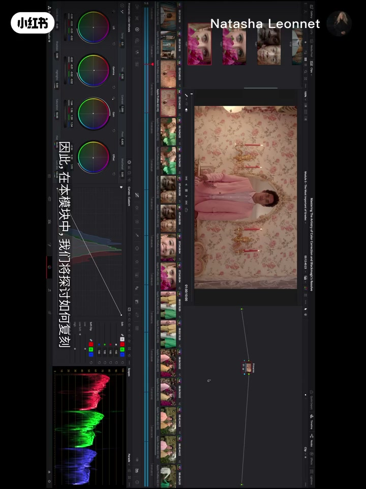
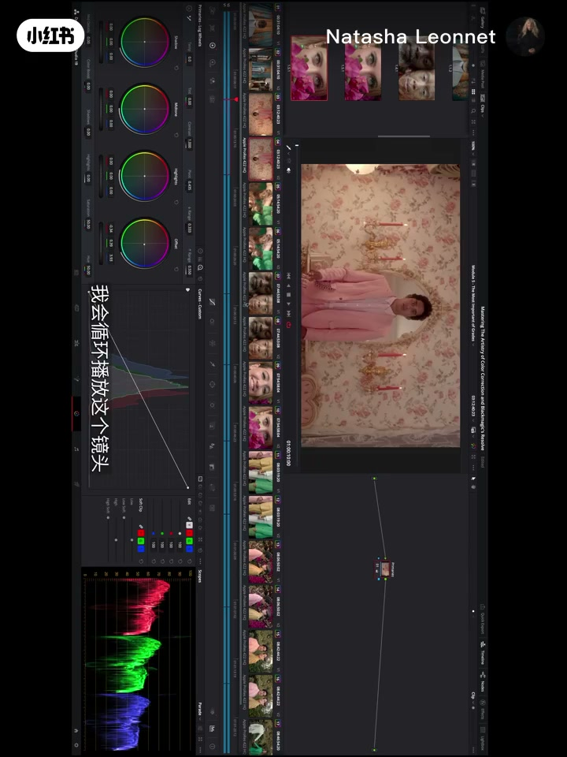
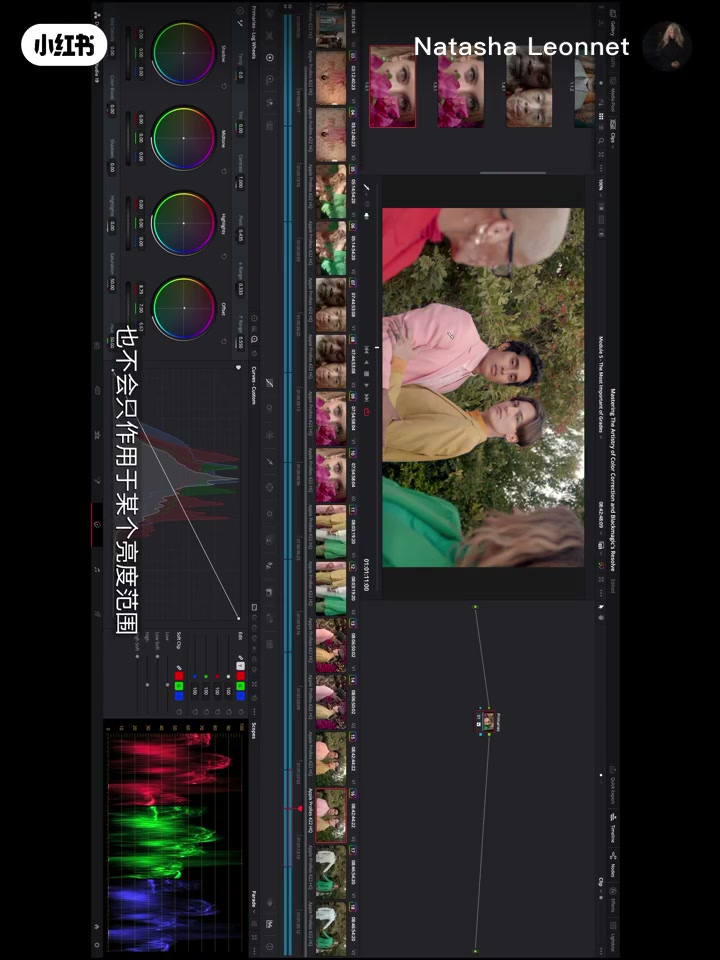

01
中文
你能做一个简短的跟练教程吗？我是完全新手。
EN
Could you make a short follow-along tutorial? I'm a complete beginner.
表达提示follow-along tutorial（跟练教程）
Scene English · 调色 · 达芬奇 · 一级校色
La La Land's Colorist Teaches Grading: Start with Primaries
🎧 语音讲解
Opening: Primaries Are Where Color Separation Begins
情境调色师 Natasha 回答小红薯的跟练请求，指出一切从 primaries（一级校色）开始——它是实现最佳色彩分离、最平衡肤色的地方，也是建立整张调色板的地方。
你能做一个简短的跟练教程吗？我是完全新手。
Could you make a short follow-along tutorial? I'm a complete beginner.
表达提示follow-along tutorial（跟练教程）
一级校色是你实现最佳色彩分离的地方，也是得到最平衡肤色的地方。
Your primaries are where you achieve the best color separation and the most balanced skin tone.
表达提示color separation（色彩分离）
它决定高光、中间调、暗部各要什么颜色，对比曲线长什么样。
It sets what colors you want in your highlights, your midtones, and your lowlights, and what your contrast curve looks like.
表达提示highlights / midtones / lowlights（高光/中间调/暗部）
「从零开始的调色」换种说法
「定下画面的颜色方向」换种说法

The Secret of Great Grading: It All Starts with Primaries
情境任何伟大的调色师都会告诉你，一切从 primaries 开始。他们最不喜欢的是脏（dirty）和浑浊（muddy）的调色——所有颜色不自觉地混在一起，画面蒙上一层没有意图的暗沉光泽。
如果你问任何一位伟大的调色师，他们都会告诉你，一切从 primaries 开始。
If you ask any of the great colorists, they'll tell you it all starts with their primaries.
表达提示colorist（调色师）
他们会用『脏』和『浑浊』来形容不喜欢的调色。
They describe corrections they dislike as dirty and muddy.
表达提示dirty and muddy（脏且浑浊）
一切感觉都在不自觉地混在一起，蒙上一层没有意图的光泽。
Everything feels like it's blending together with an unintentional patina over it.
表达提示patina（光泽/旧色层）
「调色翻车的常见词」换种说法
「混在一起不分层」换种说法

Offset and Linear Primaries: Two Ways to Work
情境达芬奇用 Offset 复刻了胶片实验室配光师的控制。有人只用线性 primaries 做出漂亮作品，有人把 Offset 与线性结合使用——作者本人两者都用。DIT 在片场用 primaries 建立参考，dailies 调色师延续它确定全片基调。
Offset 复刻了实验室配光师拥有的那些控制。
The offset replicates the controls that the lab timers had.
表达提示lab timer（胶片配光师）
有人只用线性 primaries，有人把 Offset 和线性结合使用。
Some people use just the linear primaries; some combine the offset with linear primaries.
表达提示linear primaries（线性一级校色）
DIT 在片场用它建立参考，之后交给样片调色师确定全片基调。
The DIT creates references on set, then the dailies colorist establishes the look for the film.
表达提示dailies colorist（样片调色师）
「两种工具可搭配」换种说法
「初版基调定方向」换种说法

Practice and Limits: Primaries Hit Everything, Crushing Shadows Costs
情境用练习素材做两套冷暖设置，肤色、胡子、衬衫、牙齿颜色都随 primaries 改变。primaries 影响整幅画面而不是局部；为了人物对比度压暗阴影会丢失阴影细节，这叫 crushing the shadows。Parade 波形是检查白平衡的可靠工具。
仅用一级校色，我就能彻底改变这个画面的情绪。
I can dramatically change the feeling of this material just with my primaries.
表达提示dramatically（彻底地）
primaries 会影响整幅画面，它不是局部工具。
Primaries affect your entire image; they're not specific to any one area.
表达提示entire image（整幅画面）
我加了太多对比度，把阴影细节都压掉了——这叫压碎阴影。
I added so much contrast that I'm eliminating the shadow detail — that's called crushing the shadows.
表达提示crushing the shadows（压碎阴影）
「用工具验证色彩」换种说法
「局部调整换整体工具」换种说法
「我想从头学调色」怎么说？
「先建立色彩分离」怎么表达？
「一级校色决定全片基调」用英文怎么说？
「别把阴影细节压没了」怎么讲？
Blown-out contrast crushes shadows and makes the grade look amateur.
Stylized looks sit on shaky ground without a solid primary base.
Colors you can't see on a monitor can appear in DCI P3 projection.
Primaries shift every part of the image, not just one region.